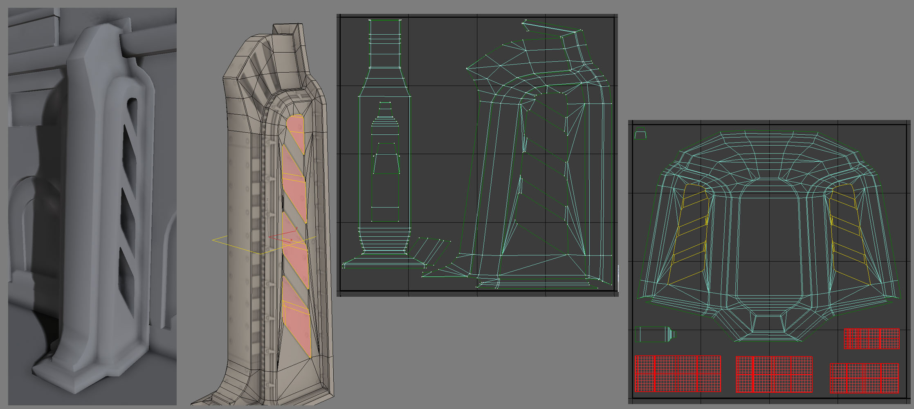

Unwrapping UVs for Lightmaps
On Creating Lightmaps
Lightmaps are probably the most difficult part of environment art creation. We rely on them to for clean light and shadow detail. They must be uniquely unwrapped so every part of the model has its own representative space to receive light and dark information.
It's important to remember that the lightmap resolution is tiny compared to the resolution of the texture UV's. It's also important to understand that the more a level needs optimized the lower the level designers will turn the resolution of the lightmaps down, even as far as 8 by 8 or 16 by 16 in the case of smaller objects. This trend requires that we leave a lot of 'padding' around each section of the lightmap UV's so that the areas that are dark do not bleed into the light areas and destroy the shadows illusion of correctness in-game.
There are 3 methods of creating lightmaps-
Often this is the most reliable method of unwrapping the lightmaps because most environment models are block shapes that are combined or repeated to create a structure. A contiguous mesh ( everything connected with no separate elements ) is often very helpful way of building to allow more efficient lightmap unwraps because you can just fold out the majority of the design connected together.
This works well because of the resolution of the lightmaps being so low, a gradient from light to dark works more easily if its across one chunk, when it is spread out across a number of fragmented sections, more padding is required inbetween those chunks in order for them to light correctly.
This often drives the need for the lightmap resolution to be higher and we have to try to avoid this as much as we can. Sometimes there is no way to avoid the need for a lower resolution and we have to add much more padding that we would like to compensate.
This is most useful for simple flat designs like BSP style walls with few bevels or extrusions. It's also very useful for large building facade pieces, such as a tenement buildings. Planar unwraps are greatly helped by the use of contiguous meshs because it is more a matter of relaxing the mesh UV's and adding coverage to the bevels by hand that are not lighting correctly in-game.
It requires a lot of back and forth sometimes but a good rule of thumb is to make sure there is more space horizontally on the unwrap than vertically because shadow casting generally comes in from the side at a slightly elevated angle rather from straight down.
So horizontal space allows more room for sharper shadow information because of the tendency of the level designers lighting choices to create more interesting shadows than would occur if they used top down lighting.
Most of the other shapes in an environment break down into variants of a cylindrical shape if they are not boxes or flat plane based shapes. A cylindrical shape compensates well for many designs that have sides as well as a front but now a back section or we would use the Box Unwrap method.
Examples
This was a contiguous mesh so it was easy to box unwrap and just fold it out horizontally to use as much of the lightmap resolution as possible. The bottom faces highlighted in the middle image were split off from the whole because they will almost always render black and if they were connected to the rest of the UV's they would bleed dark across it where it ought not to be.
The reverse is true of the detached top faces shown in the bottom image, they will always be bright. The top image shows the texture UV's.
This method of connecting as much as we safely can allows us to have a near perfect lightmap in-game at the resolution of 32 by 32 units. There are no seams at all so there's no subtle dark lines where there ought not to be.

Sometimes you need to just force pieces together with brute force. It is worth is to have a clean surface without interruptions to the lightmap. Stretching by a 1 to 1 ratio doesn't really matter with lightmaps as much as coverage does so an area that is too thin but a 1 to 1 ration will not light correctly because of bleed, but a 1 to 7 ration with twice the coverage looks great. Here you can also see I split the interior of the negative cuts because they will always be dark and we need to avoid the bleed from those across the exterior.
With large facade pieces like this Planar unwraps work well. This mesh is contiguous so that aids our work here, but the same principal works with meshs that have a few vertical or horizontal elements. As long as you place things on the lightmap UV's in the most representative layout that matches the lowpoly, it will work the same albeit with the need for a bit of padding in case some side sections render black when stacked together with other pieces.
You can see here that that the contiguous mesh layout allowed me to more easily lay the UV's out in a way that mirrors the low-poly mesh. I still move the sides, top & bottom caps away from the main section to allow for those bleed issues and I ensure the padding around those, the main and the windows at the top have the same amount of padding.
Sometimes your design won't adhere to any of these simple rules of thumb, if a design has a lot of negative space with a few separate elements we need to fragment the lightmaps and add much more padding.
You can see some pretty aggressive distortion on the intersecting vertical pieces that hold the rails together, we just forced together the 2 sides with the middle & center sections in each of those 3 pieces.
With the circular rail interiors I split out one side on its own whilst the other i attached the inner and outer faces. This was done so there would be smooth lightmap shading across 3/4 of those areas and only one break in the lightmap on the other side, which you can't see due to the straight metal beam on top of it.
Some designs just work against what works based, designs like the one below.
 When there are so many separate elements we have no choice but to crank up the texture resolution or we would waste so much space on the lightmap due to padding enough between each section that it would look terrible in-game. So I planned on this being a 128by128 lightmap knowing also that it would still not look perfect, there would be some bleed but hopefully not so much as to ruin the object.
Sometimes it's easy to just project near flat and relax the UV's because there are clear and distinct contiguous sections that can easily be connected together like in the case of the model below.
This design is essentially just a capped Cylinder a Planar base so I use those 2 basic methods to unwrap the UV's. The ground section cog is easy to just Planar unwrap down on the Z axis, then apply a relax modifier and adjust things a little to make sure nothing is getting too little coverage thanks to thin 1 to 1 ratio problems on the bevels.
The mid section was a clear case as much as a base, a cylindrical unwrap that I forced to be straight by hand to get the most coverage and use of the space. As always we are more concerned with coverage than 1 to 1 representations of each little facet of the low-poly mesh. I did an upward Z axis Planar unwrap for the underside of the top lion head sporting section and followed up with relax.
Splitting the model like this had the advantage of putting the seams at genuine seam sections in the low-poly design so it looks natural that there is a little break in the lighting there. Splitting your lightmap uv's at sections where there are sharp deep recesses or crevices is a good rule of thumb for choosing where to separate sections in a way that aids the look of the model in-game rather and downgrades it.
When there are so many separate elements we have no choice but to crank up the texture resolution or we would waste so much space on the lightmap due to padding enough between each section that it would look terrible in-game. So I planned on this being a 128by128 lightmap knowing also that it would still not look perfect, there would be some bleed but hopefully not so much as to ruin the object.
Sometimes it's easy to just project near flat and relax the UV's because there are clear and distinct contiguous sections that can easily be connected together like in the case of the model below.
This design is essentially just a capped Cylinder a Planar base so I use those 2 basic methods to unwrap the UV's. The ground section cog is easy to just Planar unwrap down on the Z axis, then apply a relax modifier and adjust things a little to make sure nothing is getting too little coverage thanks to thin 1 to 1 ratio problems on the bevels.
The mid section was a clear case as much as a base, a cylindrical unwrap that I forced to be straight by hand to get the most coverage and use of the space. As always we are more concerned with coverage than 1 to 1 representations of each little facet of the low-poly mesh. I did an upward Z axis Planar unwrap for the underside of the top lion head sporting section and followed up with relax.
Splitting the model like this had the advantage of putting the seams at genuine seam sections in the low-poly design so it looks natural that there is a little break in the lighting there. Splitting your lightmap uv's at sections where there are sharp deep recesses or crevices is a good rule of thumb for choosing where to separate sections in a way that aids the look of the model in-game rather and downgrades it.
Lightmap Coordinates Index
By default, the first set of UVs (index 0) of a static mesh will be used when generating lightmaps for static lighting. This means the same set of coordinates that is used for applying materials to the mesh will aslo be used for lightmaps. This is quite often not ideal. One reason for this is that the UVs used for generating lightmaps need to be unique, meaning that each face of the mesh must not overlap any other face within the UV space.
The reason for this should be fairly obvious: if the faces share the same UV space, the portion of the lightmap corresponding to theat space will be applied to both the faces. This can be great for diffuse and other textures as it allows the texture resolution to be higher for each face. It will result in inaccurate lighting, however. Static meshes have a property called LightmapCoordinateIndex that allows a specific set of UVs to be used for lightmap generation. By setting this property to point to a set of UVs that are unique and properly set up for lightmaps, static meshes can enjoy the best of both worlds: better texture resolution for diffuse textures and accurate lighting from lightmaps.
Contiguous UVs and Padding
Groups of triangles with contiguous UVs are called UV charts.
Padding between UV charts is necessary to prevent bleeding artifacts. Padding around the edges of the lightmap UV layout, however, is not necessary as Lightmass automatically pads around the edges by enough to prevent bleeding artifcats. Note when you are setting up padding between UV charts that 4 texels are usually required to avoid all bleeding, as DXT compression operates on 4x4 texel blocks.
This means that for a lightmap resolution of 32, the padding between the UV charts should be 12.5% of the entire UV space. However, keep in mind that placing more padding btween UV charts will result in more lightmap memory being wasted at higher lightmap resolutions.The more contiguous you can make the lightmap UVs for a mesh, the better off you will be. This will reduce the amount of padding necessary and allow for increased resolution. Prior to Lightmass being implemented or when relying mostly on vertex lighting, meshes may have been created by modeling elements seperately and merging them together.
This is less than ideal when relying on lightmaps and using Lightmass, though. It doesn't allow for good, contiguous lightmaps UVs.
Instead you end up with fragmented lightmaps with polygons that are inside the model and rendered as black which bleeds across to other parts of the mesh. Another potential pitfall is relying on automatic unwrapping as it, too, can lead to these same issues.
The best method of creating meshes and laying out their UVs for lightmaps is to model the entire mesh as one contiguous element and lay out the UVs manually.
This leads to contiguous lightmap UVs which eradicate seams and promote efficient lightmaps.
The end result is a mesh that is lit properly without any bleeding artifacts.
An added benefit of this method is that it also generally reduces the number of tris needed for the model.
Important!
You are viewing documentation for the Unreal Development Kit (UDK).
If you are looking for the Unreal Engine 4 documentation, please visit the Unreal Engine 4 Documentation site.